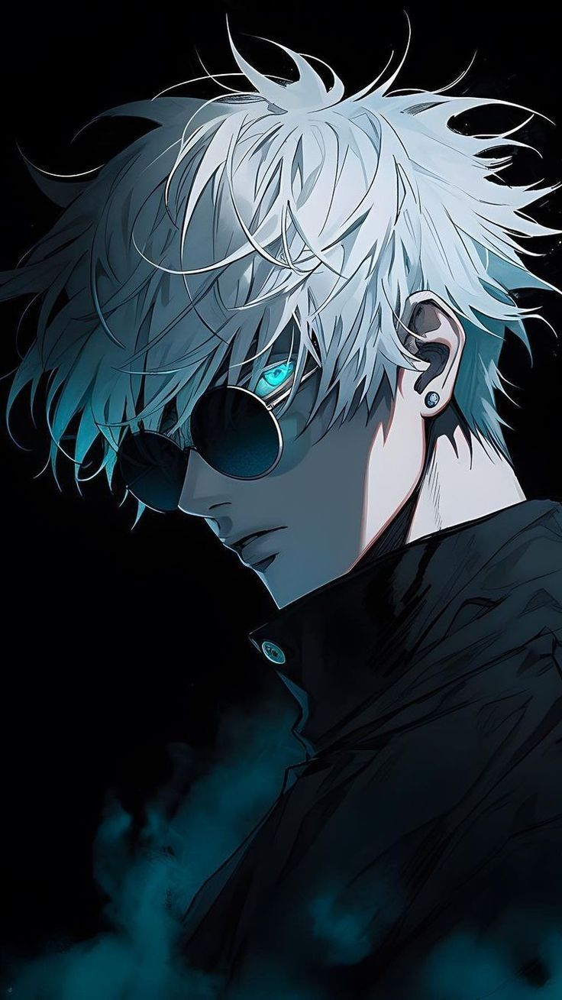
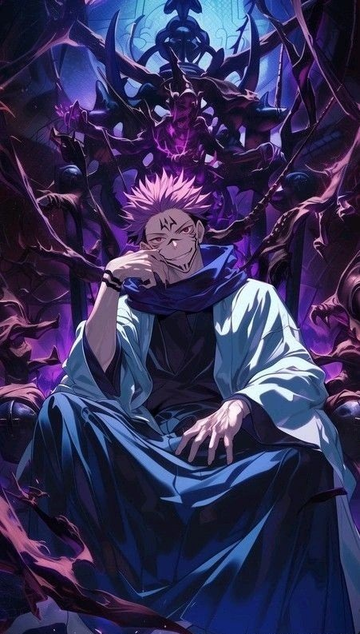
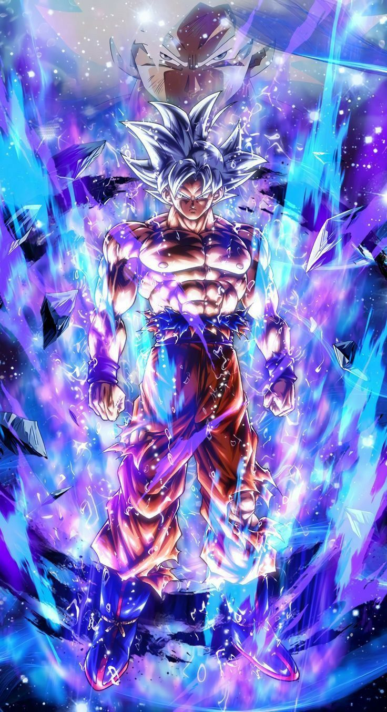
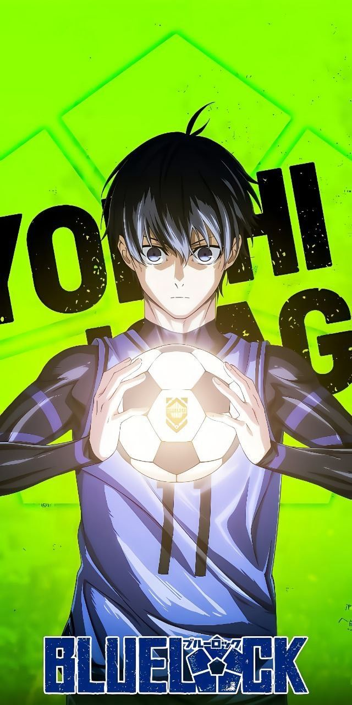
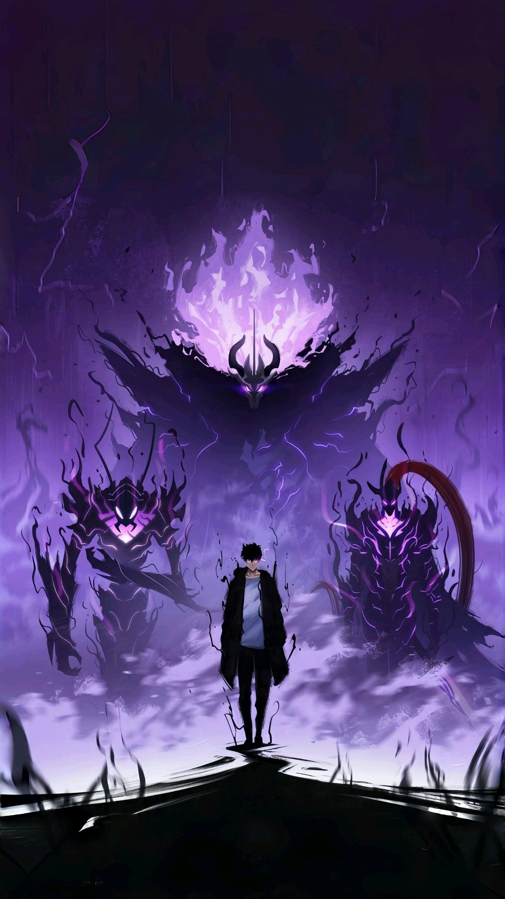
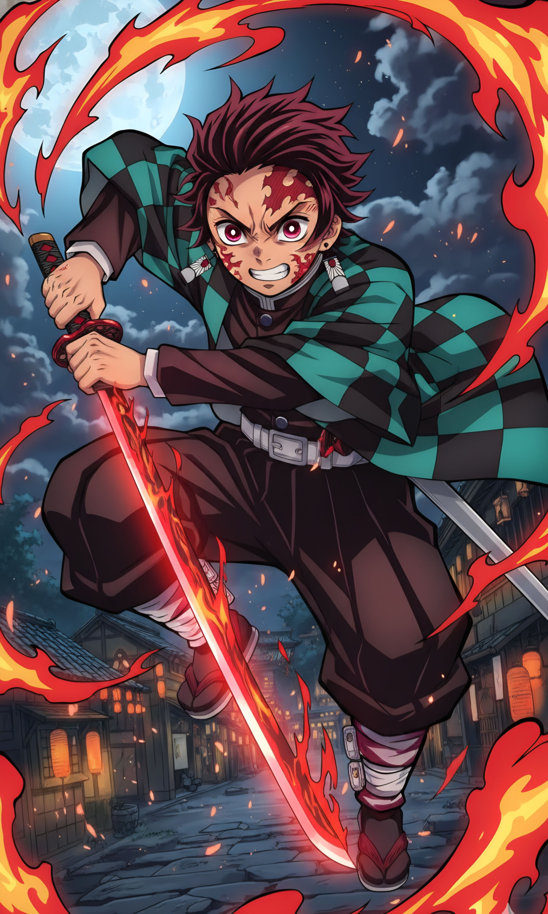

Satoru Gojo is the stongest jujutsu sorcerer in Jujutsu Kaisen. Recognized by his white hair and blindfold, Gojo possesses overwhelming power through the Limitless technique and the Six Eyes. Despite his god-like strength, he has a playful personality and deeply cares about his students. Fans admire Gojo for his confidence, charisma, and unmatched abilities.

Ryomen Sukuna is known as the king of curses in Jujutsu Kaisen. Feared for his cruelty and immense power, Sukuna is a legendary curse revived in the modern era. His terrifying presence, intelligence, and brutal fighting style making him one of the most dangerous villians in anime. Fans are fascinated by Sukuna's dark charisma and unpredictable nature.

Son Goku is the main hero of the Dragon Ball series. Raised on Earth but born a Saiyan, Goku constantly pushhes beyond his limits to protect the planet. His cheerful personality, love for battle, and powerful transformations like Super Saiyan have made him an anime icon. Fans respect Goku for his determination and pure heart.

Yoichi Isagi is the main protagonist of Blue Lock. He is a talented soccer player with exceptional spatial awareness and strategic thinking. Isagi's journey focuses on self-improvement, ego, and the desire to become the world's best striker. Fans enjoy watching his mental growth and intense competitive spirit.

He is the main protagonist of Solo Leveling. He is a complex charcter with a compelling story arc. Initially, he's portrayed as the weakest E-rank hunter, struggling to survive in a world filled with monsters and dungeons. However, everything changes when he's chosen as the "Player" of the System, a mystical program that grants him icredible powers and ability. Jinwoo's transformation is nothing short of remarkable. He evolves from a timid and insecure individual to a confident and powerful hunter, driven by his desire to protect his family and loved ones. His growth is fueled by his experiences, including traumatic events like the Double Dungeon incident, which shape his personality and inform his decisions.

He is the main protagonist of the popular manga and anime series "Demon Slayer:Kimetsu no Yaiba". He's a kind-hearted and determined young boy who becomes a Demon Slayer after his family is slaughtered by demons. Tanjiro possesses exceptional physical abilities, including superhuman strength, speed, and agility, which he enhances through his matery of the Water Breathing technique and later, the Sun Breathing style, also known as Hinokami Kagura